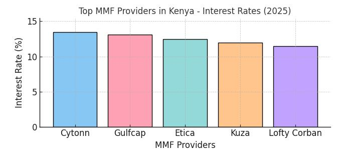
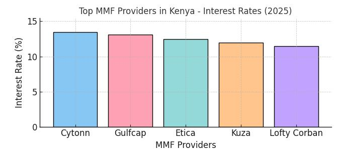

Calculate Your MMF Returns in Kenya
Use our Kenya money market fund calculator to estimate returns from top providers like Cytonn (13.44%), Gulfcap (13.11%), and Etica (12.49%). Input your investment details below.
Use our Kenya money market fund calculator to estimate returns from top providers like Cytonn (13.44%), Gulfcap (13.11%), and Etica (12.49%). Input your investment details below.
